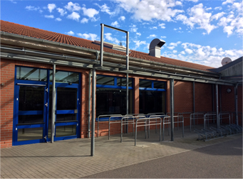

Schließung des LIDL-Marktes in der Rehbacher Straße
Mit der Schließung fällt ein wichtiger Supermarkt für die drei Ortschaften weg. Sowohl Fleischer als auch Bäcker sehen sich hier um ihre Existenz bedroht.
Der Ortschaftsrat wurde mit den ersten Schließungsgerüchten aktiv, um eine schnelle Lösung zu Gunsten aller Betroffenen und die Bürger zu finden.
Diverse Supermarktketten wurden angesprochen aber auch der Vermieter um konstruktive Mitarbeit gebeten. Sogar eine Änderung des Bebauungsplanes, welcher neue Supermärkte in der Gegend verhindert, wurde angeschoben.

2014
05.11.2014 (Hartmannsdorf)
Der Ortschaftsrat tagt in einer zusätzlichen - nicht öffentlichen - Sitzung um dem Status quo entsprechend eine Strategie für das weitere Vorgehen zu entwickeln. Eingeladen sind u.a.
Baubürgermeisterin Dorothee Dubrau und CDU-Stadträtin Sabine Heymann.
24.10.2014
Ein LVZ-Artikel verdeutlicht die zunehmende Problematik durch den fehlenden Lidl-Nachfolger und kündigt weiteres Vorgehen des
Ortschaftsrates an.
29.08.2014 (Knauthain)
2 Tage vor der sächsischen Landtagswahl machen sich Ministerpräsident Stanislav Tillich und
der CDU-Kandidat des Leipziger Südwestens Andreas Nowak vor Ort ein Bild von der Situation
und kommen mit Anliegern und Anwohnern ins Gespräch. Die Fleischerei Werner und die
Bäckerei Hickmann überreichten dem Ministerpräsidenten eine 2000 Stimmen starke
Unterschriftenliste um die Bedeutung dieses Standortes zu unterstreichen und Hilfe bei der
Problemlösung zu erbitten.
Zu dieser Zeit ist der Eigentümer des Objektes weiterhin im Gespräch mit Interessenten, die
als Nahversorger mit der relativ geringen Fläche des Marktes auskommen würden.
Leider lief der Mietvertrag mit Lidl bis August, sodass es dem Eigentümer vorher nicht möglich war, den Interessenten die Räume zu zeigen.
16.07.2014 (Leipziger Stadtratsversammlung)
In der Einwohnerfragestunde Fr. Sabine Werner versicherte Bürgermeisterin Dubrau, dass
nachdem der Antrag des Ortschaftsrates am 18.06. angenommen wurde um den
Bebauungsplan zu ändern und die Nahversorgung zu verbessern, nun „Die Verwaltung [...]
hierzu kurzfristig einen Vorschlag machen.“ wird.
Frau Werner wollte auch wissen, wie das Verfahren beschleunigt werden kann. Darauf die
Baubürgermeisterin: „Der Grundstückseigentümer sei derjenige, der etwas tun könne und auch
tue. Nach Kenntnis der Verwaltung sei er zurzeit auf der Suche nach einem neuen Pächter bzw.
Käufer. Dabei sei zu beachten, dass der Vertrag mit Lidl noch bis zum August laufe. So lange
seien dem Eigentümer die Hände gebunden.”
Quelle: Ratsinformationssystem eRIS
18.06.2014 (Leipziger Stadtratsversammlung)
Der Antrag des Ortschaftsrates Hartmannsdorf wurde angenommen.
21.05.2014 (Leipziger Stadtratsversammlung)
„Beschluss Nr.: RBV-2067/14
Der Oberbürgermeister wird beauftragt zu prüfen, wie eine schnelle Nachfolgeregelung nach der Schließung des Lidl-Marktes in Knauthain realisiert werden kann.
Votum: mehrheitlich angenommen bei einigen Gegenstimmen und einigen
Stimmenthaltungen.“
OV Matthias Kopp kritisierte, dass obwohl die Diskussion in der RV erfreulich ist, es angesichts
der Dringlichkeit als Maßnahme nicht ausreicht und er hoffe, dass der Beschlussvorschlag des
Ortschaftsrates in der nächsten Sitzung beschlossen werden würde.
„Bürgermeisterin Dubrau berichtet, logischerweise habe die Verwaltung mit dem Eigentümer
gesprochen und mit ihm vereinbart, dass potenzielle Nutzer die Adresse des Eigentümers
bekommen. Allerdings sei es der Verwaltung nicht möglich, eine reine Vermarktung zu
machen.
Die Bürgermeisterin ergänzt, die Verwaltung sei gegen eine wesentliche Erweiterung des
Standortes, weil das bedeuten würde, dass andere Standorte in der Umgebung, die jetzt die kleinteilige Versorgung sichern, kaputt gehen würden.“
Quelle: Ratsinformationssystem eRIS
16.04.2014 (Leipziger Stadtratsversammlung)
Der Ortschaftsrat Hartmannsdorf-Rehbach-Knautnaundorf bringt einen Beschlussvorschlag in
die Ratsversammlung ein. Ziel ist ein Änderungsantrag für den B-Plan 355, wie beim
Bürgerforum gefordert.
Der Antrag des Ortschaftsrates V/OR 38 wird in den Ausschuss Stadtentwicklung und Bau
verwiesen.
Der Antrag der Fraktion Die Linke „V/A 528 wird in den Fachausschuss Wirtschaft und Arbeit, in den Fachausschuss Stadtentwicklung und Bau, in den Ortschaftsrat Hartmannsdorf-
Knautnaundorf und in den Stadtbezirksbeirat Leipzig-Südwest verwiesen.“
Quelle: Ratsinformationssystem eRIS
19.02.2014 Bürgerforum in Hartmannsdorf
Im großen Ballsaal des Gasthofes „Zur Ratte“ fand ein Bürgerforum mit offener Diskussion zum Thema „KEIN LIDL - UND WIE WEITER?“ statt. Anwesend waren neben den zahlreich erschienenen Bürgern aus Knauthain, Hartmannsdorf, Rehbach und Knautnaundorf
natürlich der Ortschaftsrat und CDU-Stadträtin Sabine Heymann.
Ein kurzer Bericht samt Video zum Bürgerforum findet sich unter www.info-tv-leipzig.de
Vor allem bei den ortsansässigen Traditionsfirmen Fleischerei Werner und Bäckerei Hickmann,
welche seit Generationen im Familienbetrieb geführt werden, sind die Nerven angespannt.
Durch den Weggang von Lidl entfällt zunehmend die Laufkundschaft, was auf kurz oder lang
die Existenz am gewohnten Standort bedroht.
An dem Abend kam vor allem 2 Schwerpunkte heraus:
es soll der Eigentümer / Vermieter schnellstmöglich in Kontakt mit interessierten
Nachmietern der Lebensmittelnahversorgung treten / gebracht werden
es muss ein Verfahren in Gang gebracht werden um den bestehenden Bebauungsplan
355 dahingehend zu ändern, dass auch ein Neubau an gegebener Stelle für Discounter
möglich ist, wenn sich für die bisherigen Räume kein Nachmieter der Nahversorgung
findet
03.02.2014 (Knauthain)
Der Einzelhandelsmarkt Lidl in der Rehbacher Straße 7, 04249 Leipzig-Knauthain blieb erstmals geschlossen. Lidl war der einzige Discounter am Ort. Die nächste Einkaufsmöglichkeit nach Wegfall sind der Konsum in Knautkleeberg, sowie Kaufland und die Discounter in Großzschocher.